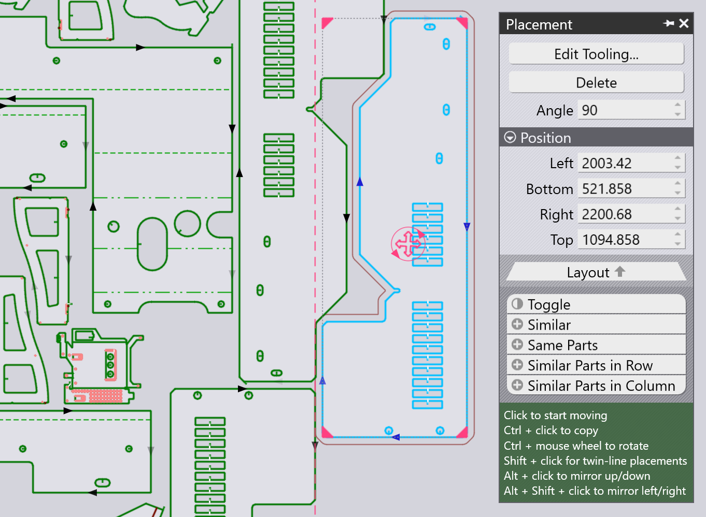

Placeringspanel
En del, der er blevet tilføjet (eller en eksisterende del på layoutet), kan flyttes, drejes eller gentages med Placeringspanelet, der fremkommer, når der klikkes på delen:

-
Indstillingerne Left, Bottom, Right og Top er grænserne for delens afgrænsningsramme, og disse kan bruges til at positionere delen præcist.
-
Man kan også bare klikke på det røde, cirkelformede håndtag i midten af delen og begynde at trække det for at positionere det på pladen. Idet delen trækkes rundt, vil TecZone Laser tilføje snapstyrelinjer for at hjælpe med til at positionere delen med en præcis spalte (brobredde) til de tilstødende dele. Mens delen placeres, tegnes der også et omrids omkring delen, forskudt fra den faktiske delkontur med brobredden.
-
Indstillingen Angle kan bruges til at dreje delen, så andre retninger kan afprøves. Når delen trækkes med dens trækhåndtag, kan Ctrl tasten også holdes nede og musen kan drejes for at dreje delen interaktivt.
-
Brug Ctrl+Klik for at lave en kopi af delen, og begynd derefter at trække denne kopi.
-
Brug Alt+Klik for at spejle delen lodret, og Alt+Shift+Klik for at spejle delen vandret.
-
Der er flere Vælgere i bunden af dette panel:
-
Klik Skift for at fravælge de valgte dele, og vælg alt andet.
-
Klik Similar for at vælge alle kopier af den samme del i samme vinkel.
-
Klik Same Parts for at vælge alle kopier af den samme del (uanset drejevinkel).
-
Klik Similar Parts in Row for at vælge alle dele i samme vinkel og i samme vandrette position.
-
Klik Similar Parts in Column for at vælge alle dele i samme vinkel og i samme lodrette position.
-
TwinLine (common-line) placering
Brug af Shift+Klik for at begynde at trække en del vil sætte placeringen i tilstanden twinline - når der trækkes to parallelle kanter tæt sammen, vil TecZone Laser klikke dem sammen med præcis en spaltebreddeafstand mellem dem, så de begge kan skæres som en fælles linje. Her er et eksempel på, at sådan et snap sker, mens vi trækker en del med Shift+Klik:

Når musen slippes, danner de to dele en enkelt dobbeltlinjet gruppe, hvor den fælles linje kun skæres én gang (det kan sea, at der kun er en enkelt skærelinjepil på den diagonale linje i midten).

Gentagelse og gruppering af dele

Man kan vælge en del, og derefter bruge de fire håndtag i hjørnerne af afgrænsningsrammen til at gentage delen. Dette kan gøres selv med en gruppe af dele, der er valgt. Her er et eksempel, hvor der startes med to valgte, tilstødende dele, og klikker på hjørnehåndtaget for at begynde at trække dem ud:

Når man har det nødvendige antal rækker og kolonner, kan man klikke for at indsætte de gentagne dele:

Gentagelse med TwinLine
Hvis der startes med en enkelt del eller en dobbeltlinjet enhed bestående af flere dele, kan man holde Shift nede, mens hjørnet trækkes ud for at lave en twin-line gentagelse:

Gruppering
Når man har valgt flere dele, kan man klikke på knappen Group for at gruppere dem sammen som en enhed. Så vil alle arbejdsgange såsom flyt, drej, spejling og gentag fungere på denne Group. Når en gruppe er valgt, kan der klikkes på Ungroup for at opdele denne gruppering og behandle dem som individuelle dele igen.
Redigér delklargøring
Knappen Edit Tooling på placeringspanelet kan bruges til at justere klargøringen af laserskæring af en eller flere udvalgte dele direkte i layoutets kontekst. Vælg først en gruppe af lignende dele, som klargøring skal redigeres for:

Alle andre dele er tonet grå, TecZone Laser zoomer ind på de valgte dele, og derefter kan klargøring af delen redigeres. Lad os i dette eksempel antage, at vi ønsker at tilføje en Scrap cutting arbejdsgang på et af de cirkelformede huller for at skære den stanseklump op:

Hvis der laves en redigering (såsom at tilføje skrotskæring), kan det ses, at redigeringen anvendes på tværs af alle de valgte dele. Et klik på et sted væk fra gruppen af dele, der redigeres, gendanner tilbage til det fulde layout. Man kan se, at de tre udvalgte dele har skrotskæreklargøring tilføjet til dem.